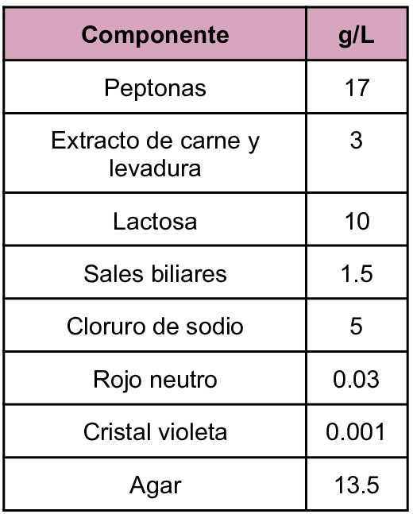
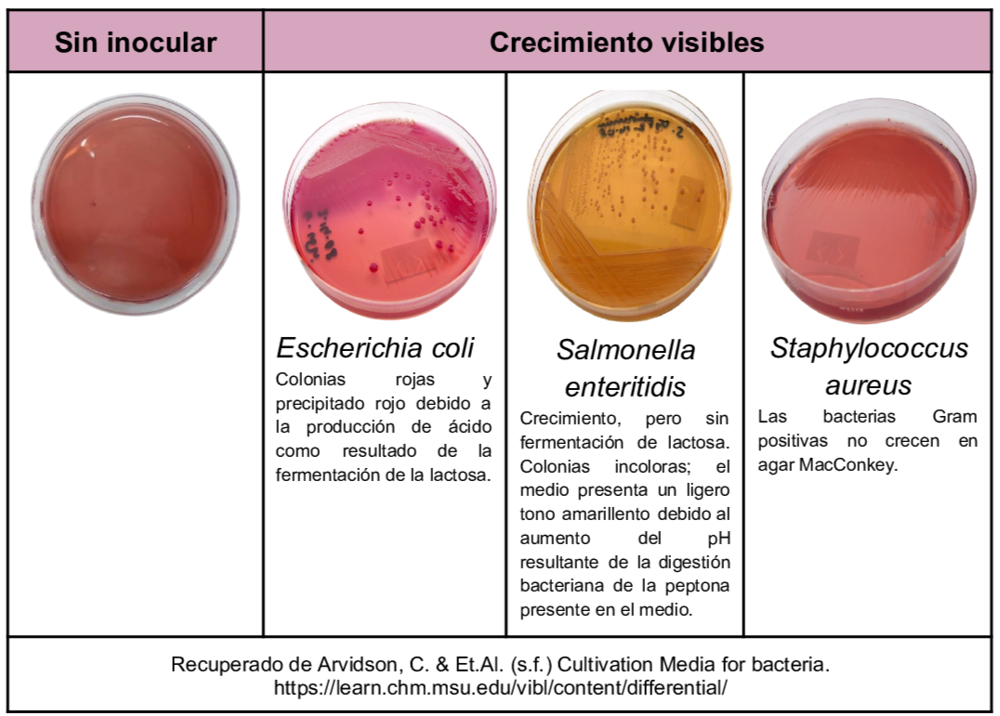

Medio de cultivo de tipo selectivo y diferencial que es utilizado para el aislamiento de bacilos gram negativos entre sus componentes se encuentra la lactosa el cual es el hidrato de carbono fermentable y el que permite diferenciar entre bacterias fermentadoras de lactosa las cuales acidifican el medio y las colonias adquieren un color rosado, mientras que las no fermentadoras son incoloras. Las sales biliares y el cristal violeta actúan como agentes selectivos inhibiendo el desarrollo de los Gram positivos. Cuando se genera la fermentación de la lactosa, existe una disminución en el pH alrededor de la colonia provocando un viraje del indicador (rojo neutro) y precipitando las sales biliares.
Composición

pH a 25°C 7.1±0.2
Resultados Posibles
Se puede esperar un crecimiento de tipo variado dependiendo del microorganismo inoculado, se pueden observar colonias rosadas indicando la fermentación de la lactosa, por otro lado pueden obervarse colonias incoloras sobre un fondo amarillo indicando que la bacterias no fermenta la lactosa.

Referencias
Aryal, S. (2022) MacConkey Agar- Composition, Principle, Uses, Preparation and Colony Morphology. https://microbiologyinfo.com/macconkey-agar-composition-principle-uses-preparation-and-colony-morphology/
Romero, G. (2023) “Guía General de Medios de Cultivo Utilizados en la Industria” [Tesis de Licenciatura, Universidad Nacional Autónoma de México]. Repositorio DGBSDI. https://ru.dgb.unam.mx/server/api/core/bitstreams/30f99386-fb11-4b83-8931-b260bbcd5eef/content